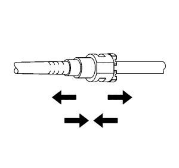

Servicio del adaptador de conexión rápida del collarín plástico
Procedimiento de desmontaje
Advertencia: Consulte Advertencia sobre la gasolina y sus vapores en la sección Prólogo.
-
Nota: En este vehículo se pueden usar varios tipos de cierres rápidos con collar de plástico de combustible y emisión de vapores.
| • | Apertura por apriete (3) |
| • | Retén de deslizamiento (4) |
Advertencia: Consulte Advertencia sobre el uso de gafas de seguridad y aire comprimido en la sección Prólogo.
Nota: Las siguientes instrucciones son válidas para todos estos tipos de cierres salvo que se indique lo contrario.
- Elimine con aire comprimido la suciedad del cierre rápido.

- Este paso es válido sólo para los conectores tipo Bartholomew. Apriete las lengüetas de apertura del cierre rápido de plástico.

- Este paso es válido sólo para los conectores tipo Q Release. Abra el cierre apretando la lengüeta hacia el otro lado de la ranura del cierre.

- Este paso es válido sólo para los conectores de apertura por apriete. Apriete en el punto indicado por las flechas en los dos lados del anillo de plástico que rodea el cierre rápido.
- Este paso también es válido sólo para los conectores de apertura por apriete. Apriete en el punto indicado por las flechas en los dos lados del anillo de plástico que rodea el cierre rápido.

- Este paso es válido sólo para los conectores de retén de deslizamiento. Abra el acoplamiento apretando sobre el lado de la lengüeta de apertura para presionarla un poco. Si la lengüeta no se mueve intente presionarla desde el lado contrario. La lengüeta sólo se moverá en una dirección.
- Este paso es válido sólo para los conectores TI de pulsación. Abra el cierre apretando en las lengüetas señaladas por la flecha.

- Separe la conexión.
- Limpie el extremo macho del tubo con un trapo de taller limpio.
- Inspeccione los dos extremos del cierre por si hubiera suciedad o rebabas.
- Limpie o sustituya los componentes según sea necesario.
Procedimiento de montaje

- Aplique unas cuantas gotas de aceite limpio de motor en el extremo macho del acoplamiento.
- Una los dos lados del cierre rápido para que la función de retención encaje en su sitio.

- Una vez montados, tire de los dos lados del cierre rápido para asegurarse de que la conexión es segura.
| © Copyright Chevrolet. Reservados todos los derechos |